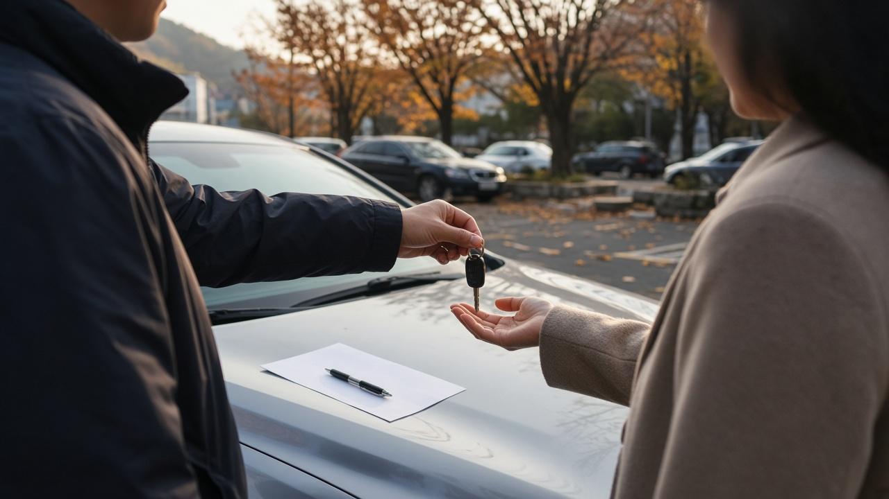
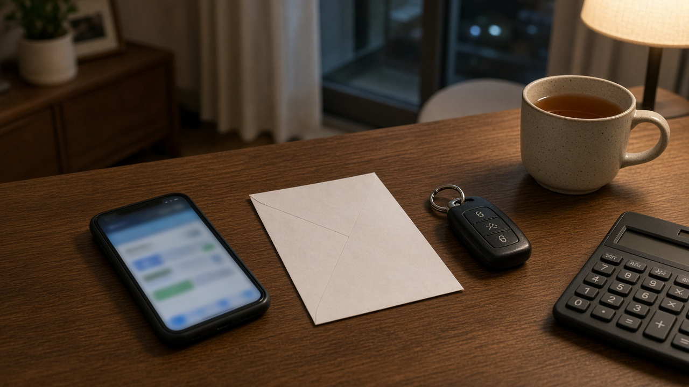
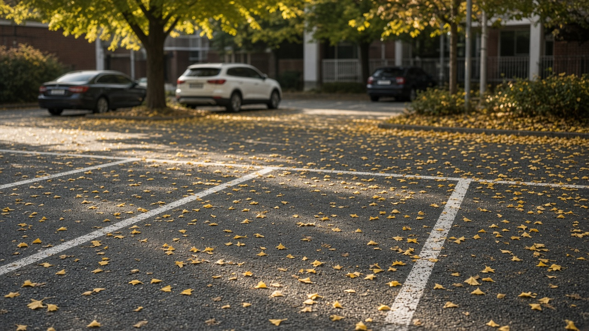

중고차 팔고 나서 꼭 챙길 세 가지, 명의이전 15일과 자동차세 연납 환급, 자동차보험 해지 환급까지 정리

차를 팔고 돈까지 받았는데 한 달 뒤에 자동차세 고지서가 날아오거나, 넘긴 차가 사고를 냈다는 연락을 받으면 정말 당황스럽죠. 중고차는 열쇠를 넘긴 순간 끝나는 게 아니라 명의, 세금, 보험 세 가지가 깔끔하게 정리돼야 비로소 끝이에요. 특히 연초에 자동차세를 한꺼번에 낸 분이라면 돌려받을 돈도 생기고요. 오늘은 찾기쉬운 생활법령정보와 금융위원회, 손해보험협회 안내를 바탕으로 차를 판 사람이 챙겨야 할 것만 순서대로 정리해 볼게요.
차를 넘긴 날과 명의가 바뀐 날은 다를 수 있어요
가장 먼저 확인할 건 명의이전이에요. 자동차관리법에 따라 중고차를 산 사람은 15일 이내에 소유권 이전등록을 해야 해요. 문제는 이 의무가 산 사람에게 있다 보니, 판 사람 입장에서는 실제로 등록이 됐는지 모르고 지나가기 쉽다는 점이에요.
이전등록이 늦어지면 산 사람에게 과태료가 붙어요. 지연 기간이 10일 이내면 10만원이고, 그 뒤로는 하루에 1만원씩 늘어나 50일 이상이면 50만원이에요. 하지만 그 사이 서류상 주인은 여전히 판 사람이라, 세금이나 과태료 고지가 판 사람 앞으로 오는 일이 생길 수 있어요.
다행히 산 사람이 등록을 미루면 판 사람이 직접 이전등록을 신청할 수 있도록 법에 정해져 있어요. 개인끼리 거래했다면 이전등록신청서, 자동차양도증명서, 판 사람의 인감증명서나 본인서명사실확인서가 필요하니, 거래하는 날 양도증명서를 함께 쓰고 사본을 꼭 챙겨 두세요. 매매상사를 통해 팔았다면 매매업자가 등록을 대신할 수 있으니 언제 처리되는지 날짜를 물어 두는 게 좋아요.

연납한 자동차세는 넘긴 다음 날부터 일할로 돌려받아요
자동차세는 원래 6월과 12월에 나눠 내지만, 연초에 1년 치를 한 번에 내는 연납을 신청한 분이 많아요. 이렇게 미리 낸 상태에서 차를 팔면, 자동차등록원부상 이전일 이후 남은 기간만큼 세금을 돌려받을 수 있어요.
계산 방법은 간단해요. 1년 세액에 남은 날수를 곱하고 그해 전체 날수로 나누는 일할계산이에요. 예를 들어 1년 세액이 30만원인 차를 10월 25일에 넘겼다면 남은 67일분, 대략 5만5천원 정도가 돌아오는 셈이에요. 실제 금액은 연납 할인 여부와 지자체 계산에 따라 조금 다를 수 있어요.
서울 서초구 안내를 보면 따로 신청하지 않아도 이전일의 다음 달 이후에 환급이 진행되고, 연납한 지자체 세무부서에 연락하면 더 빨리 처리된다고 해요. 위택스에 로그인해서 환급 메뉴의 환급금 신청 화면에서도 조회와 신청이 가능해요. 만약 위택스에 환급금이 보이지 않는다면 관할 자치단체에서 아직 자료를 보내지 않은 경우라서, 시군구청 세무과에 문의하면 된다고 정부민원안내콜센터는 안내하고 있어요.
자동차보험은 차와 함께 저절로 넘어가지 않아요
많은 분이 헷갈려하는 부분이 보험이에요. 생활법령정보에 따르면 보험에 든 차를 팔아도 그 보험계약은 원칙적으로 산 사람에게 자동으로 넘어가지 않아요. 그래서 판 사람은 두 가지 중 하나를 골라야 해요. 보험을 해지하고 남은 보험료를 돌려받거나, 보험사에 승계를 알리고 승낙을 받는 방법이에요.
승계를 원하면 서면 등으로 보험사에 알려야 하고, 보험사는 10일 이내에 승인 여부를 알려야 해요. 그 기간 안에 답이 없으면 승인한 것으로 봐요. 다만 보험사가 승계를 거절하면 차를 넘긴 뒤 생긴 사고는 보상하지 않으니, 승계를 할 생각이라면 결과를 꼭 확인해야 해요.
해지할 때 돌려받는 돈은 해지 사유에 따라 달라져요. 손해보험협회 자동차보험 종합포털은 가입자 책임이 없는 사유로 해지하면 남은 기간을 하루 단위로 계산해 돌려받고, 고지의무 위반처럼 가입자 책임이 있으면 단기요율로 계산해 환급액이 더 적을 수 있다고 설명해요. 차를 팔아서 해지하는 경우라면 보험사에 매매 사실을 증명할 서류가 무엇인지 미리 물어보세요.
의무보험은 조금 달라요. 자동차손해배상 보장법에 따라 차를 넘긴 날부터 이전등록 신청기간이 끝나는 날까지는 산 사람이 의무보험을 자동으로 이어받아요. 이 기간의 보험료는 보험사가 아니라 산 사람에게 돌려달라고 청구할 수 있다는 점, 소비자24 상담사례에서도 같은 내용으로 안내하고 있어요.

다음 차를 바로 사지 않는다면 할인등급이 사라지는 시점을 알아 두세요
차를 팔고 한동안 차 없이 지내는 분도 있죠. 이때 신경 쓸 게 자동차보험 할인할증등급이에요. 등급은 1등급부터 29등급까지 있고 처음 가입하면 11등급인데, 무사고로 오래 탈수록 숫자가 올라가며 보험료가 내려가요.
본인 명의 보험이 끝난 날부터 3년 안에 다시 가입하면 기존 등급을 이어서 쓸 수 있어요. 3년이 지나면 예전에는 누구든 11등급으로 다시 시작했지만, 금융위원회와 금융감독원이 2024년 8월 1일 책임이 시작되는 계약부터 기준을 바꿨어요. 15등급부터 29등급까지였던 무사고 운전자는 이전 등급에서 3등급 낮춘 등급을 받고, 12등급부터 14등급은 11등급, 9등급과 10등급은 그대로, 1등급부터 8등급은 8등급을 적용받아요.
그러니 무사고 기간이 길었던 분이라면 3년이 넘기 전에 다음 차를 살지 미리 생각해 두는 게 유리해요. 가족 차의 운전자로 이름을 올리는 경우 경력 인정이 되는지는 보험사마다 조건이 다르니 상담으로 확인해 보세요.
차를 판 날 바로 챙기면 좋은 순서
정리해 보면 이렇게 하면 깔끔해요. 계약하는 날에는 자동차양도증명서를 함께 쓰고 사본과 산 사람의 연락처를 받아 두세요. 그리고 차를 넘긴 날짜와 시간을 문자나 사진으로 남겨 두면 나중에 사고나 과태료 시비가 생겼을 때 도움이 돼요.
보름쯤 지나면 이전등록이 됐는지 꼭 확인하세요. 산 사람에게 새 등록증 사본을 받거나 자동차등록원부를 떼어 보면 돼요. 등록이 안 됐다면 판 사람이 직접 신청할 수 있다는 점을 기억해 두세요.
등록이 확인되면 보험사에 연락해 해지나 승계를 처리하고, 연납을 했다면 다음 달쯤 위택스에서 자동차세 환급금이 들어왔는지 확인하면 끝이에요. 오늘 정리한 내용은 10월 25일 기준 공공기관 안내를 바탕으로 했고, 세부 처리 방식은 지자체와 보험사마다 다를 수 있으니 마지막 확인은 담당 창구에서 해 주세요.
참고 자료 찾기쉬운 생활법령정보 중고차 매매 자동차 이전등록하기와 자동차 세금 및 자동차보험 승계받기, 서초구 세금 자주 묻는 질문, 정부민원안내콜센터 위택스 자동차세 환급 안내, 손해보험협회 자동차보험 종합포털, 소비자24 자동차보험 상담사례, 금융위원회 자동차보험 경력인정기준 개선방안 2024년
태그 중고차팔기 중고차명의이전 자동차세환급 자동차세연납 자동차보험해지 자동차보험승계 보험료환급 할인할증등급 중고차직거래 위택스환급